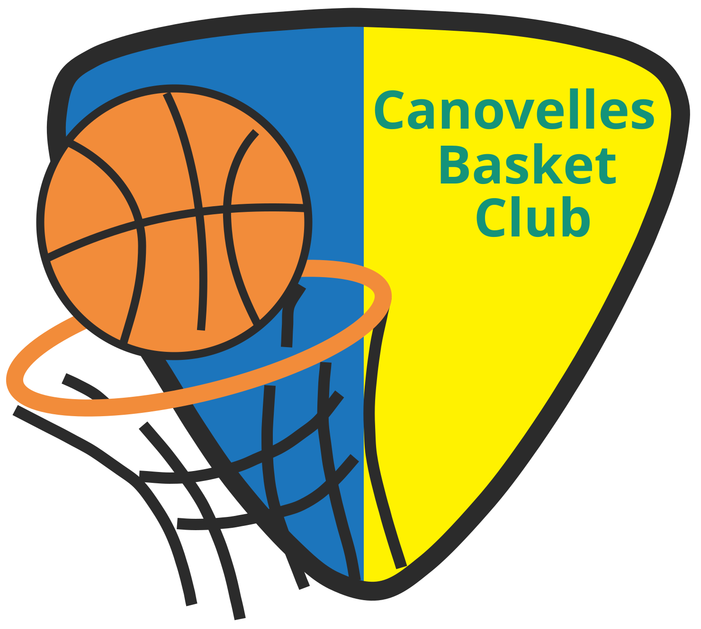

Esportiva i completa
Blau marí i groc de l’equipació, tipografia condensada. Web sencera: club, equips, notícies, activitats i patrocinadors.
Veure l’opció 1 →
Tria una opció per veure-la. Cada proposta és una web completa i independent.
Blau marí i groc de l’equipació, tipografia condensada. Web sencera: club, equips, notícies, activitats i patrocinadors.
Veure l’opció 1 →Colors suaus i el carnet del club com a element principal. Ara té la portada i la pàgina de preinscripció.
Veure l’opció 2 →Estructura de web de sempre amb els colors del terra del pavelló i entrades suaus. La secció especial: troba el grup del teu fill sobre una mitja pista.
Veure l’opció 3 →La proposta més atrevida: tota la web és el marcador. El scroll fa córrer el rellotge, les fotos s’encenen amb bombetes i la preinscripció és el botó de temps mort.
Veure l’opció 4 →